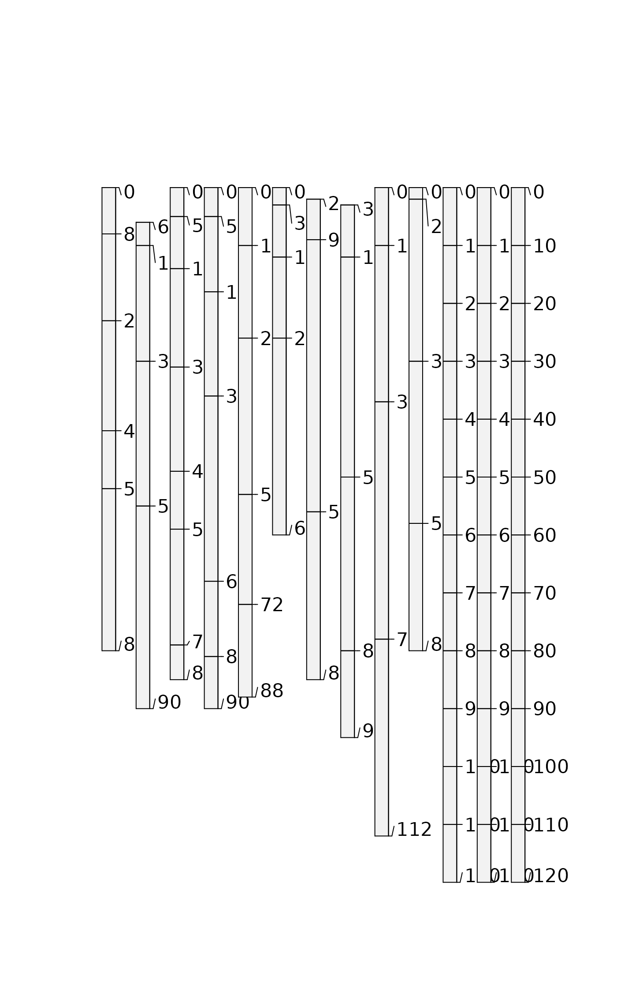
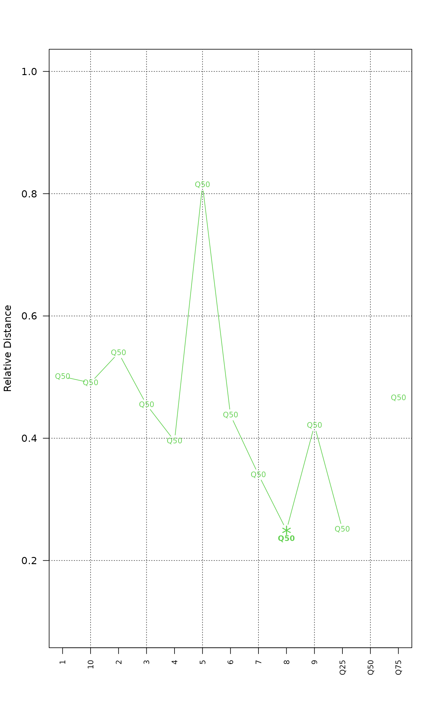
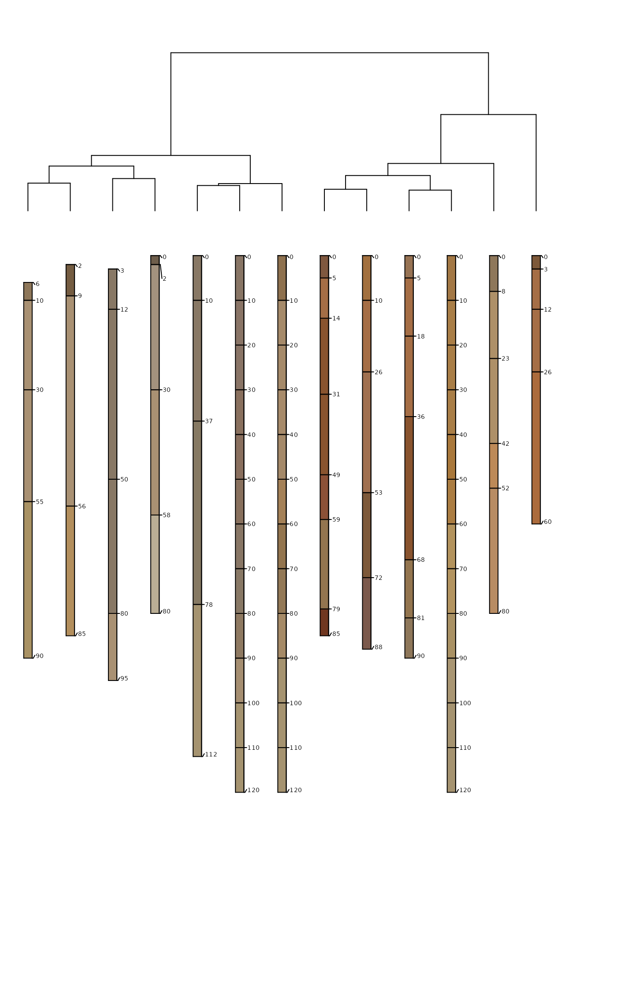

Soil samples from 10 soil profiles, taken from the Sierra Foothill Region of California.
Format
A data frame with 46 observations on the following 15 variables.
- id
soil id
- top
horizon upper boundary (cm)
- bottom
horizon lower boundary (cm)
- clay
clay content
- cec
CEC by amonium acetate at pH 7
- ph
pH in 1:1 water-soil mixture
- tc
total carbon percent
- hue
Munsell hue (dry)
- value
Munsell value (dry)
- chroma
Munsell chroma (dry)
- mid
horizon midpoint (cm)
- ln_tc
natural log of total carbon percent
- L
color: l-coordinate, CIE-LAB colorspace (dry)
- A
color: a-coordinate, CIE-LAB colorspace (dry)
- B
color: b-coordinate, CIE-LAB colorspace (dry)
- name
horizon name
- soil_color
horizon color
Details
These data were collected to support research funded by the Kearney Foundation of Soil Science.
Examples
## this example investigates the concept of a "median profile"
# required packages
if (require(ape) & require(cluster)) {
data(sp3)
# generate a RGB version of soil colors
# and convert to HSV for aggregation
sp3$h <- NA
sp3$s <- NA
sp3$v <- NA
sp3.rgb <- with(sp3, munsell2rgb(hue, value, chroma, return_triplets = TRUE))
sp3[, c('h', 's', 'v')] <- t(with(sp3.rgb, rgb2hsv(r, g, b, maxColorValue = 1)))
# promote to SoilProfileCollection
depths(sp3) <- id ~ top + bottom
# aggregate across entire collection
a <- slab(sp3, fm = ~ clay + cec + ph + h + s + v, slab.structure = 10)
# check
str(a)
# convert back to wide format
library(data.table)
a.wide.q25 <- dcast(as.data.table(a), top + bottom ~ variable, value.var = c('p.q25'))
a.wide.q50 <- dcast(as.data.table(a), top + bottom ~ variable, value.var = c('p.q50'))
a.wide.q75 <- dcast(as.data.table(a), top + bottom ~ variable, value.var = c('p.q75'))
# add a new id for the 25th, 50th, and 75th percentile pedons
a.wide.q25$id <- 'Q25'
a.wide.q50$id <- 'Q50'
a.wide.q75$id <- 'Q75'
# combine original data with "mean profile"
vars <- c('top', 'bottom', 'id', 'clay', 'cec', 'ph', 'h', 's', 'v')
# make data.frame version of sp3
sp3.df <- as(sp3, 'data.frame')
sp3.grouped <- as.data.frame(rbind(as.data.table(horizons(sp3))[, .SD, .SDcol = vars],
a.wide.q25[, .SD, .SDcol = vars],
a.wide.q50[, .SD, .SDcol = vars],
a.wide.q75[, .SD, .SDcol = vars]))
# re-constitute the soil color from HSV triplets
# convert HSV back to standard R colors
sp3.grouped$soil_color <- with(sp3.grouped, hsv(h, s, v))
# give each horizon a name
sp3.grouped$name <- paste(
round(sp3.grouped$clay),
'/' ,
round(sp3.grouped$cec),
'/',
round(sp3.grouped$ph, 1)
)
# first promote to SoilProfileCollection
depths(sp3.grouped) <- id ~ top + bottom
plot(sp3.grouped)
## perform comparison, and convert to phylo class object
## D is rescaled to [0,]
d <- NCSP(
sp3.grouped,
vars = c('clay', 'cec', 'ph'),
maxDepth = 100,
k = 0.01
)
h <- agnes(d, method = 'ward')
p <- ladderize(as.phylo(as.hclust(h)))
# look at distance plot-- just the median profile
plot_distance_graph(d, 12)
# similarity relative to median profile (profile #12)
round(1 - (as.matrix(d)[12, ] / max(as.matrix(d)[12, ])), 2)
## make dendrogram + soil profiles
# setup plot: note that D has a scale of [0,1]
par(mar = c(1, 1, 1, 1))
p.plot <- plot(p,
cex = 0.8,
label.offset = 3,
direction = 'up',
y.lim = c(200, 0),
x.lim = c(1.25, length(sp3.grouped) + 1),
show.tip.label = FALSE)
# get the last plot geometry
lastPP <- get("last_plot.phylo", envir = ape::.PlotPhyloEnv)
# the original labels, and new (indexed) order of pedons in dendrogram
d.labels <- attr(d, 'Labels')
new_order <- sapply(1:lastPP$Ntip,
function(i)
which(as.integer(lastPP$xx[1:lastPP$Ntip]) == i))
# plot the profiles, in the ordering defined by the dendrogram
# with a couple fudge factors to make them fit
plotSPC(
sp3.grouped,
color = "soil_color",
plot.order = new_order,
y.offset = max(lastPP$yy) + 10,
width = 0.1,
cex.names = 0.5,
add = TRUE
)
}
#> 'data.frame': 72 obs. of 10 variables:
#> $ variable : Factor w/ 6 levels "clay","cec","ph",..: 1 1 1 1 1 1 1 1 1 1 ...
#> $ all.profiles : num 1 1 1 1 1 1 1 1 1 1 ...
#> $ p.q5 : num 6.55 6.39 6.39 6.39 6.39 ...
#> $ p.q25 : num 9.1 8.75 8.75 7.94 7.94 ...
#> $ p.q50 : num 14.3 14.5 14.5 15.7 15.9 ...
#> $ p.q75 : num 17.8 19.4 21.3 24.9 25.1 ...
#> $ p.q95 : num 21.7 32.3 32.3 51.4 51.4 ...
#> $ contributing_fraction: num 0.89 1 1 1 1 1 0.9 0.9 0.58 0.15 ...
#> $ top : int 0 10 20 30 40 50 60 70 80 90 ...
#> $ bottom : int 10 20 30 40 50 60 70 80 90 100 ...

#> Computing dissimilarity matrices from 13 profiles
#> [0.3 Mb]
#> cache: 40 | slices: 100

